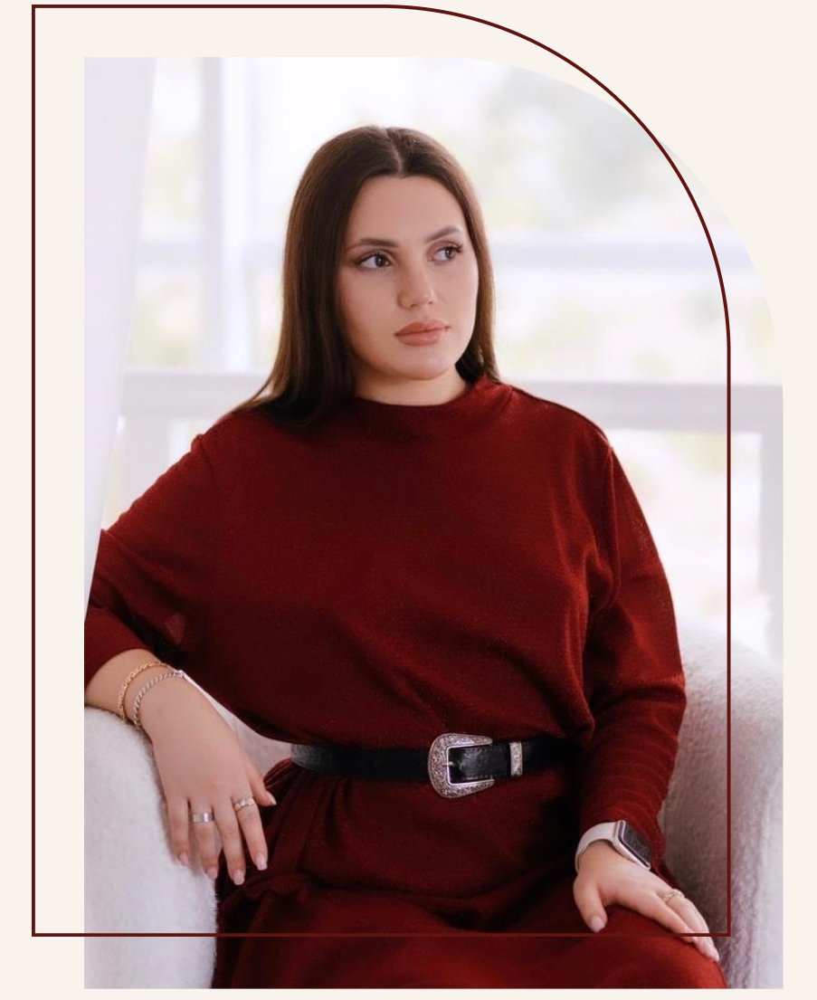

Образование
Дипломированный клинический психолог с отличием. Окончила кафедру глубинной психологии и психотерапии — 6,5 лет обучения.
Действительный член ECPP — European Confederation of Psychoanalytic Psychotherapies.
Психоаналитическая психотерапия онлайн
Клинический психолог. Психоаналитическая терапия онлайн для тех, кто хочет бережно разобраться в себе, отношениях и повторяющихся внутренних сценариях.

Профессиональная основа работы — клиническое образование, личная терапия, супервизия и психоаналитический подход.
Дипломированный клинический психолог с отличием. Окончила кафедру глубинной психологии и психотерапии — 6,5 лет обучения.
Действительный член ECPP — European Confederation of Psychoanalytic Psychotherapies.
Более 6 лет личной психотерапии: интегративный подход, гештальт-терапия, психоаналитическая психотерапия и лакановский анализ.
Регулярная супервизия и интервизионная группа. Мастерские по практическому психоанализу 1 раз в месяц с 2022 года по настоящее время.
Психоаналитическая психотерапия и психоанализ: классический подход и психоанализ объектных отношений Мелани Кляйн.
Если формулировка пока не ясна, это нормально: первая встреча помогает бережно собрать запрос и понять, с чего начать.
Клиент и терапевт знакомятся, обсуждают ожидания и готовность к работе.
Вы формулируете, что беспокоит и чего хотелось бы добиться от терапии.
Психолог задаёт вопросы, помогает исследовать переживания, связи и повторяющиеся сценарии.
На онлайн-встречах фиксируется прогресс или регресс, корректируется фокус работы.
Главный формат — регулярная психотерапия онлайн. Остальные услуги можно выбрать под конкретный запрос или ситуацию.
Долгосрочная онлайн-работа по видеосвязи. Продолжительность — 50 минут.
4 000 ₽ ЗаписатьсяРазовая встреча для прояснения запроса и получения профессиональной обратной связи.
5 000 ₽ ЗаписатьсяРабота с семейным запросом. Длительность встречи — 1,5 часа.
7 000 ₽ ЗаписатьсяКонсультация по профессиональным и организационным запросам.
5 000 ₽ ЗаписатьсяПо требованию клиента, в том числе во время праздников и выходных.
7 000 ₽ ЗаписатьсяПрофессиональная супервизионная встреча для специалистов.
3 500 ₽ ЗаписатьсяУслуга по переписке: подробное описание ситуации и чёткий запрос. Время — 50 минут.
2 000 ₽ ЗаписатьсяСМС-формат на 50 минут или видео-консультация до 30 минут по договорённости.
1 000 ₽ ЗаписатьсяКонсультация проходит по предварительной записи и 100% предоплате.
Об отмене или переносе встречи важно сообщить не менее чем за сутки.
Бронь места занимает 5 часов; если оплаты нет, бронь снимается.
Самостоятельные форматы — отдельно от личных консультаций. Вебинар для бережной работы над собой и профессиональный материал для специалистов.
Краткий подход к своему внутреннему Я: разбор самооценки, внутреннего критика и того, как детский опыт влияет на отношение к себе.
Кому подойдёт: тем, кто хочет разобраться в своей самооценке, неуверенности и внутренней критике.
Инструмент для упрощения психодиагностики клиента. Подойдёт специалистам любых психологических направлений.
Кому подойдёт: психологам и психотерапевтам любых направлений.
Вебинар «Самооценка или Я-концепция» — для личной опоры: разобраться в самооценке, внутреннем критике и отношении к себе.
«Терапевтическая анкета» — рабочий инструмент психолога для диагностики клиента и отслеживания динамики.
Я работаю безопасно, без жести, давления и осуждения. Не оцениваю клиента и его проблемы, не приписываю диагнозы и не смотрю с точки зрения хорошо/плохо или правильно/неправильно.
В работе использую метод свободных ассоциаций, интерпретации, анализ сновидений, работу с переносом, реляционный анализ, развитие ментализации и межличностной ассертивности.
Полина — специалист высшего уровня квалификации психолога. К Полине я обратилась почти год назад (в январе 2022 года), была созависимость с родителями, партнёром, было ощущение, что я нахожусь «не в своей тарелке». Постепенно, шаг за шагом, мы работаем над моими травмами, учусь ценить, понимать и принимать себя. Благодаря психотерапии с Полиной я улучшила (и продолжаю улучшать) все сферы своей личной жизни. Благодарю Полину за её поддержку, чуткость и понимание. Однозначно рекомендую от всей души Полину, как лучшего квалифицированного специалиста.
Пришла к Полине на консультацию, потому что считала своей главной проблемой низкую самооценку. После нескольких консультаций я поняла, что всё куда глубже, чем я могла представить. После месяца работы я переехала в город, который давно мечтала, через два обрела больше уверенности в восприятии себя и окружающего мира. Увидела корень проблемы и в жизни появилось больше красок и радости. На консультациях чувствуется поддержка от Полины. Полина изучает новое, вносит на консультации.
Мне хочется поблагодарить Полину за её профессионализм, она дала мне прийти к пониманию и осознанию того, как можно поменять свою жизнь к лучшему.
Полина поделила мою жизнь на До и После, не побоюсь такой громкой формулировки. Я закончила созависимые отношения, улучшила отношения с мамой, нашла работу с большим доходом. Отдельная благодарность Полине за её мягкость и поддержку на сессии.
Полина — это специалист, после консультаций с которым у меня начались изменения в жизни. Первый психолог, с которым я вижу реальный результат. От чистого сердца рекомендую этого специалиста!
Полина очень квалифицированный и знающий своё дело специалист! Очень много развивается в направлении психотерапии, постоянно проходит обучения, вкладывает душу в каждого клиента. Если вы думаете, к какому специалисту записаться — смело записывайтесь к Полине, вы не пожалеете!
Полину однозначно рекомендую, хожу к ней с февраля. Помогает найти ответы на многие вопросы (деньги/семья/отношения/самооценка/отношения в социуме). Разбирает сны очень хорошо! Даёт домашние задания, разную литературу, видео. Сессии проходят комфортно.
Обратилась к Полине около полугода назад с проблемой постоянных болезней. Уже на первой сессии выяснили причины психосоматических реакций и на данном этапе у меня практически не встречаются симптомы болезней, в них просто отпала нужда. Хотя я думала, что это никогда не закончится. Очень благодарна Полине за её труд.
Лучший психолог, с которым я работала. Вижу заметные изменения как с первой сессии, так и в течение двух лет работы. Рекомендую!
Полина, добрый день! Очень хочется похвалиться за себя тебе)) Я поборола себя и взяла индивидуальные тренировки у тренера. Сегодня у меня была персональная тренировка в качалочке, оплатила сразу за 10 занятий, дабы не пропускать ни одной тренировки, и ещё муж помог мне оплатить курс массажа (тоже 10 сеансов). Невероятно горжусь собой и нашей работой в терапии! Благодарю тебя от всего сердца.
Я хожу на сессии к Полине уже на протяжении года. Работа с ней — моя гордость. Очень повезло, что с первого раза попала к квалифицированному специалисту. Недавно меня спросили, чем мне помогла психотерапия, и я начала перечислять ряд своих достижений. И вдруг поняла, что это все мои успехи и что за год качество жизни и сама жизнь стали значительно лучше. Поменялось окружение, научилась отстаивать свои личные границы, а также заявлять о себе и своих желаниях и много чего ещё. Я безмерно благодарна Полине за нашу совместную работу!
Пошла к Полине с определённой проблемой, полгода примерно работали, но я сдала назад, хотя в каком-то роде это тоже показатель, значит двигались в нужном направлении. Наверно, не все осиливают работу над собой. Прекрасный специалист, как только решусь вернуться к психотерапии, хочу именно к Полине.
Доброе утро! Безусловно, вы дали мне максимально развёрнутые ответы в рамках вашей услуги. Признаться честно, ожидала, что мы ограничимся двумя сообщениями и не более. Порадовало, что вы рассмотрели ситуацию не поверхностно, задали важные вопросы, мне действительно дало это ориентир и помогло справиться с гложущими чувствами. Это не заменит полноценную терапию, но вы, я заметила, стараетесь дать приблизительный эффект. Думаю, что и впредь буду обращаться по данной услуге. Рада, что у вас появилась такая тема. Благодарю за вашу работу.
Спасибо большое, Полина, за рекомендации и ответы. Действительно очень развёрнуто, видно, что вы разбираетесь в теме и хотите помочь. Даже от этих сообщений я успела задуматься. Я была у вас на вебинаре по самооценке, уже там для себя сделала определённые выводы о себе. Желаю удачи в вашей профессии, а книги я прочту обязательно. Спасибо за уделённое время!
Полина, я тебя от всей души благодарю за твои сообщения, я услышала такие важные слова для себя. Мне стало спокойнее, надеюсь, завтра будет ещё лучше. Если будут вопросы, напишу, но пока нет, мне всё понятно. Ты вселила в меня уверенность. Благодарю ещё раз.
Полина, я благодарю вас за то, что ответили на все мои вопросы, развёрнуто разложили всё по полочкам. Теперь я понимаю, с чем нужно работать. Вы меня направили, дальше сама. Успехов вам! Желаю больше клиентов, с которыми вы будете с лёгкостью работать вместе на пути к новым результатам.
Спасибо большое, благодаря вашему объективному мнению со стороны, я открыла для себя новые вещи. Мне понравилась беседа с вами, сейчас я получила ответы на свои вопросы.
Вопросов больше нет. Спасибо, получила ответы на всё, что волновало по этой теме, и поняла, в каком направлении дальше двигаться.
Полина, спасибо вам огромное, мне было очень полезно! И стало легче. Открылись ответы на многие вопросы, которыми я задавалась. Это была моя очень давняя хотелка — взять у вас консультацию, потому что я подписана на вас лет пять, поэтому очень счастлива, спасибо.
Я после интерпретации в шоке ещё весь день ходила.
Очень рада этой услуге. Потому что мне очень нравится, как ты умеешь интерпретировать сны. Это определённо одна из лучших и любимых тем в психотерапии с тобой.
Я каждый раз в шоке, когда Полина интерпретирует сон и попадает в самую точку.
Это реально магия какая-то.
Это знакомство клиента и терапевта. Вы рассказываете, что беспокоит, формулируете запрос, обсуждаете срок консультирования и готовность к работе.
Да. Консультация проводится только по видеосвязи в WhatsApp, Telegram, ВКонтакте, Яндекс Телемост и иных мессенджерах по усмотрению клиента.
Стандартная консультация длится 50 минут. Семейное консультирование — 1,5 часа.
Нажмите кнопку записи и напишите администратору в WhatsApp или Telegram. Режим работы: с 09:00 до 21:00.
Об отмене или переносе записи требуется сообщить не менее чем за сутки. Первая встреча не переносится, деньги за неё не возвращаются.
Всё, что обсуждается на сессии, остаётся на сессии. Распространение информации всегда согласовывается с клиентом.
Консультация осуществляется по 100% предоплате. Бронь места занимает 5 часов; при отсутствии оплаты в указанное время бронь снимается.
Напишите удобным способом. На первой консультации можно обсудить, что вас беспокоит, и понять, подходит ли вам формат работы.
Предпочитаете самостоятельный формат? Посмотреть продукты и материалы →